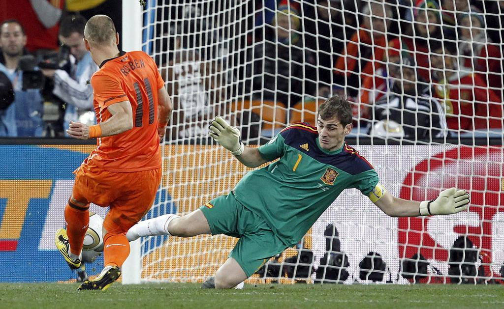

El portero que lo paraba todo
Iker Casillas Fernández, nacido el 20 de mayo de 1981 en Móstoles, Madrid, es un exfutbolista español conocido por su destacada carrera como portero. Fue una figura clave tanto en el ámbito nacional como internacional, siendo el capitán de la selección española desde 2006 hasta 2016, período durante el cual ganaron la Eurocopa en 2008 y 2012, y la Copa del Mundo en 2010, logrando así un histórico "triplete".
Su trayectoria comenzó en las categorías inferiores del Real Madrid, debutando en el primer equipo a los 16 años en un partido de Liga de Campeones en 1997. Su talento lo llevó a ser convocado por la selección sub-20 y a debutar en Primera División con el Real Madrid en 1999, convirtiéndose en una figura destacada desde temprana edad.
En su trayectoria profesional, Casillas pasó la mayor parte de su carrera en el Real Madrid, desde sus categorías inferiores hasta el primer equipo, donde jugó de 1999 a 2015. Durante su tiempo en el club, fue capitán entre 2010 y 2015, y se convirtió en el segundo jugador con más partidos en la historia del Real Madrid.
Después de sufrir un infarto agudo de miocardio en 2019, Casillas se retiró del fútbol en agosto de 2020, aunque previamente había formado parte del cuerpo técnico del Futebol Clube do Porto durante un tiempo como medida de precaución en su recuperación.
A lo largo de su carrera, Casillas fue reconocido como uno de los mejores porteros del mundo, ganando numerosos premios y siendo incluido en equipos ideales tanto por la FIFA como por la UEFA. También fue candidato al Balón de Oro durante varios años.
Después de su retiro, Casillas incursionó en la política deportiva al presentar su candidatura para las elecciones a la presidencia de la Real Federación Española de Fútbol.
